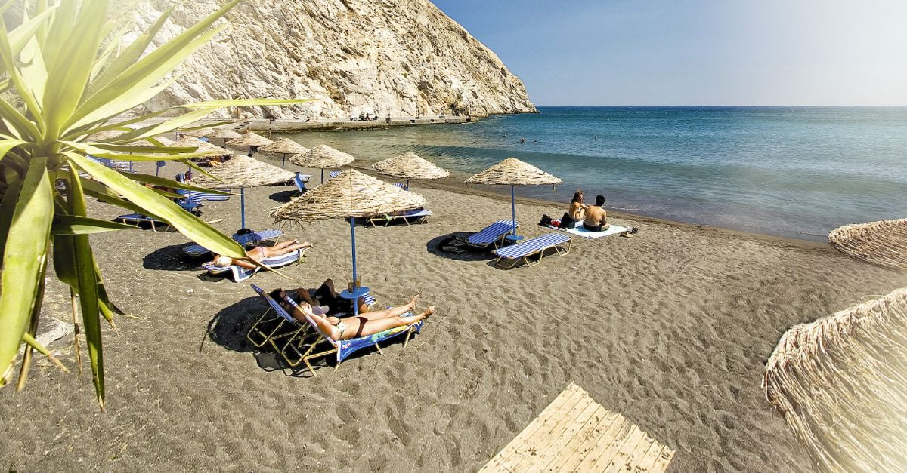
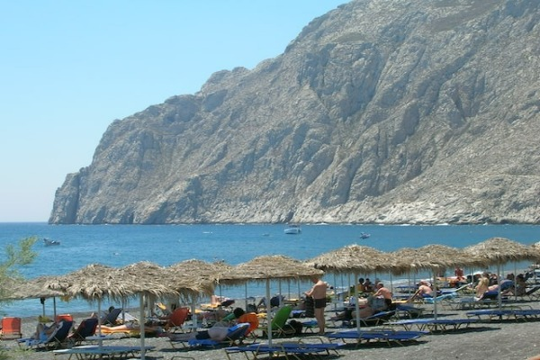
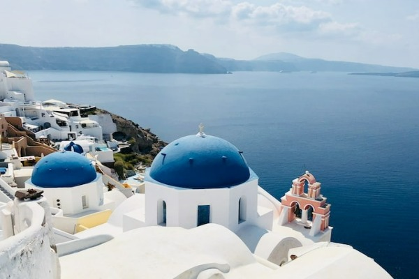
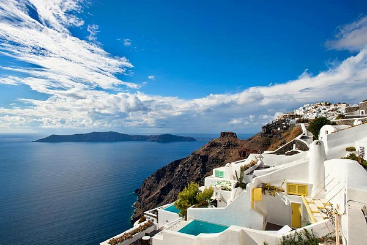

Welcome to Santorini, one of the most romantic islands in the world!
Santorini is one of the top destinations in Greece and is located in the southern Aegean Sea. It belongs to Cyclades, the most well-known Greek group of islands with the characteristic whitewashed villages near the blue sea.
Explore Resorts
Santorini Holiday Resorts

Kamari
Kamari is a seaside village, situated on the southeastern coast of Santorini, at the north foot of Mesa Vouno mountain, a few kilometers away from the capital. You can access it without difficulty by bus, taxi or rental car. Its name comes from a small arch, which was part of an ancient sanctuary dedicated to Poseidon, standing on the south end of the beach.
- Easy Access To Beach
- Great Restaurants
- Great Bars

Oia
In Oia you can stroll in the charming narrow paths, visit shops, galleries and enjoy the atmospheric cafes, bars and restaurants. At the bottom of the village is Ammoudi Bay where there is a row of traditional taverns by the sea with local food. You can also swim there, in wonderful crystal waters with the breathtaking caldera view above you.
- Cable Car
- Blue Domes
- Great Hotels

Imerovigli
Imerovigli is an ideal choice for a private, romantic holiday filled with tranquility. It forms an impressive scenery of whitewashed houses, flowers and cobblestone alleys. You can wander through the peaceful, paved paths away from the hustle and the bustle. Enjoy relaxing moments and a view you cannot resist. Here you can unwind in the traditional taverns.
- Sunshine
- Hiking
- Great Hotels
Santorini Weather Forecast
SANTORINI WEATHERPlaces To Stay
Luxury Hotels
Experience world-class amenities and stunning caldera views. Perfect for a romantic getaway with fine dining and spa services.
Traditional Villas
Stay in authentic Cycladic architecture with whitewashed walls and blue domed roofs. Charming and intimate accommodations.
Budget Guesthouses
Affordable options with local charm. Great for travelers looking for a more authentic and budget-friendly experience.
Boutique Apartments
Modern, stylish accommodations with a personal touch. Perfect for couples and small groups seeking comfort and character.
Things To Do
Sailing & Water Sports
Explore the Aegean Sea with boat tours, windsurfing, and swimming. Visit the volcanic islands and hot springs.
Sunset Viewing
Witness the world-famous Santorini sunset from Oia or other scenic viewpoints. An unforgettable experience.
Wine Tasting
Sample local volcanic wines at traditional wineries. Learn about Santorini's unique wine production.
Hiking Trails
Trek through scenic caldera trails with panoramic views. Explore ancient villages and volcanic landscapes.
Photography Tours
Capture stunning photos of whitewashed villages, blue domes, and breathtaking sea views.All tours are led by professional photographers.
Culinary Tours
Experience authentic Greek cuisine with cooking classes and food tours featuring local specialties. All tours are led by professional chefs.
What Visitors Say
"Santorini exceeded all my expectations! The sunsets are absolutely breathtaking, and the hospitality of the locals is wonderful. Highly recommend!"
"The food, the views, the people - everything about Santorini is magical. We had our honeymoon here and it was perfect. We're already planning our return!"
"An unforgettable experience! From the iconic blue domes to the volcanic beaches, every moment in Santorini is Instagram-worthy. Worth every penny!"
Best Time to Visit
Spring (April-May)
Temperature: 20-25°C (68-77°F)
Why Visit: Mild weather, fewer crowds, flowers in bloom, perfect for hiking and exploring.
Best for: Budget travelers, photographers, nature lovers
Summer (June-August)
Temperature: 28-32°C (82-90°F)
Why Visit: Sunny days, vibrant nightlife, water sports, peak diving season.
Best for: Beach lovers, party-goers, water sports enthusiasts
Fall (September-October)
Temperature: 22-27°C (72-81°F)
Why Visit: Great weather continues, harvest season begins, fewer tourists.
Best for: Wine enthusiasts, romantic couples, travelers seeking balance
Winter (November-March)
Temperature: 14-18°C (57-64°F)
Why Visit: Peaceful atmosphere, local experience, budget deals.
Best for: Solo travelers, budget seekers, those wanting authentic local life
Travel Tips & Essentials
Getting There
Santorini has its own airport with direct flights from Athens and other European cities. Ferries are also available. The port is in Athinios Bay with shuttle buses connecting to various villages.
Local Transport
Buses are affordable and reliable. Rent a car or ATV for flexibility exploring the island. Taxis are available but more expensive. Walking is best within villages.
Money & Essentials
Currency is Euro (€). ATMs are available in main towns. Credit cards widely accepted in tourist areas. Bring sunscreen (UV is intense), comfortable shoes for cobblestone streets, and a hat.
Language & Culture
Greek is the official language, but English is spoken in tourist areas. Locals appreciate efforts to speak Greek. dress modestly in villages and Orthodox churches. Respect local customs and traditions.
Food & Dining
Try local specialties: fava, saganaki, fresh seafood, and local wines. Eat where locals eat for authentic experiences. Dinner typically starts later (8-9pm). Tipping is appreciated but not required.
Booking Accommodations
Book early for peak seasons (June-August). Look for stays in local neighborhoods like Kamari or Perivolos for authentic experience. Negotiate rates during off-season visits.
Frequently Asked Questions
How long should I stay in Santorini?
3-5 days is ideal to explore the main villages, relax on beaches, and enjoy activities. If you want a slower pace or island-hopping, consider 7+ days.
Is Santorini expensive?
It's pricier than mainland Greece but manageable with a budget. Eat at local tavernas, stay in traditional villages, and visit in shoulder seasons to save money.
Can I do a day trip to Santorini?
Yes, but not recommended. A day trip is rushed. Stay overnight to experience the sunset and evening atmosphere that make Santorini special.
What's the best beach in Santorini?
Kamari and Perivolos offer long sandy beaches. For unique volcanic sand, try Amoudi Bay. Red and Black beaches near Akrotiri have dramatic landscapes.
Is travel insurance necessary?
Highly recommended, especially for activities like hiking, sailing, or water sports. Medical care is good but can be expensive for tourists.
Can I see the sunset from Oia?
Yes, but it gets very crowded in summer. Arrive 2-3 hours early or visit other spots like Firostefani or Imerovigli for equally stunning sunsets with fewer crowds.
Location Map
Santorini is located in the southern Aegean Sea at coordinates 36.42°N 25.43°E